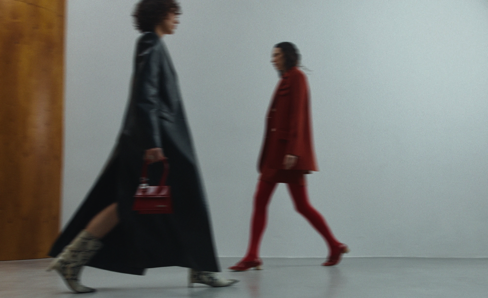

PERSONAL LANDING PAGE
FOR A FASHION STYLIST


I designed a landing page for a stylist who needed a cohesive space to showcase her work and services. The goal was to strengthen her personal brand and create a clear path for attracting clients.
I approached the design as a story using the AIDA model, which allowed me to highlight her personality and skills while guiding visitors toward action. This project also gave me the chance to refine my skills in narrative-driven landing page design and explore a new subject area and visual style.

Given the nature of the styling industry, I began by curating strong visuals, making imagery the cornerstone of the design. Photographs carried the personality and aesthetic, so I drew inspiration from fashion editorials — minimalist, clean layouts where visuals take centre stage.

I opted for a neutral typographic and minimal colour palette, using bold red accents on key CTAs to maintain visual hierarchy without distracting from the photography. The restraint in colour and type allowed the images to carry the brand's personality, while carefully placed red details injected energy and guided the eye through the page.


BOOK
A SERVICE


TYPOGRAPHY
(01)
Headings and body text
Neue Haas Grotesk
(02)
Logotype
misto
(03)
Accent signature
Modelista Signature


ММ

COLOUR PALETTE

Red

White

Black
